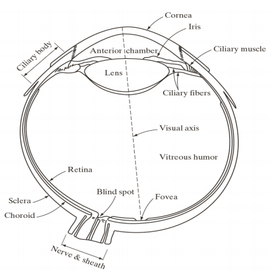
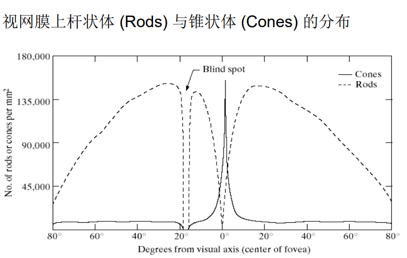
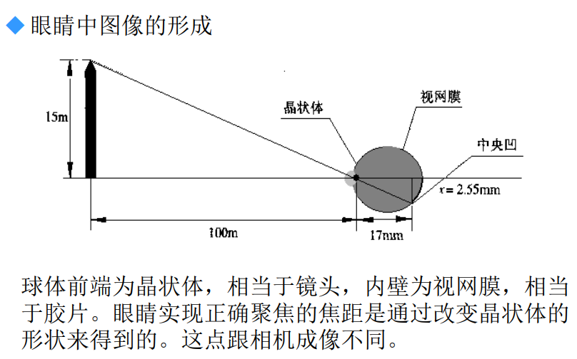
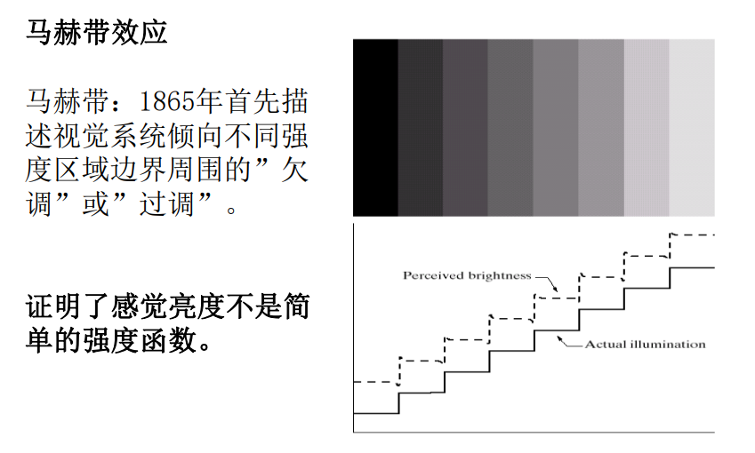
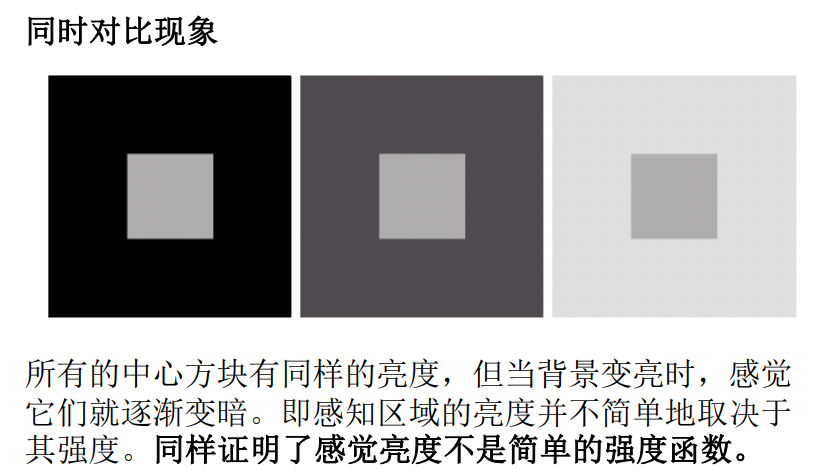
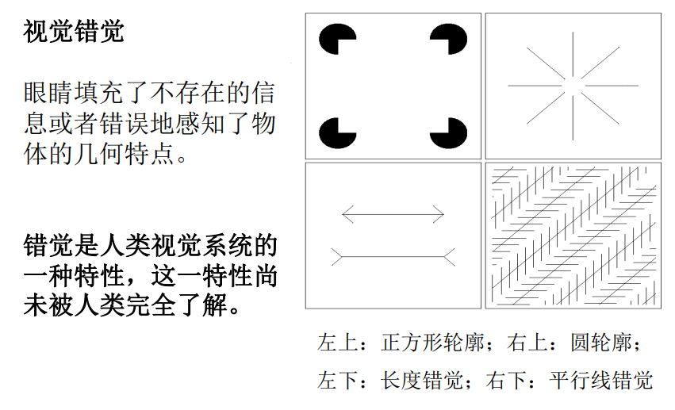
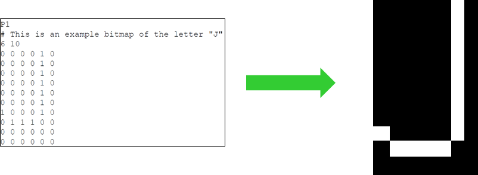
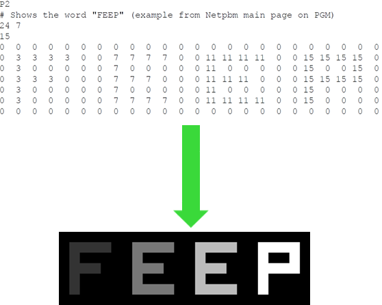
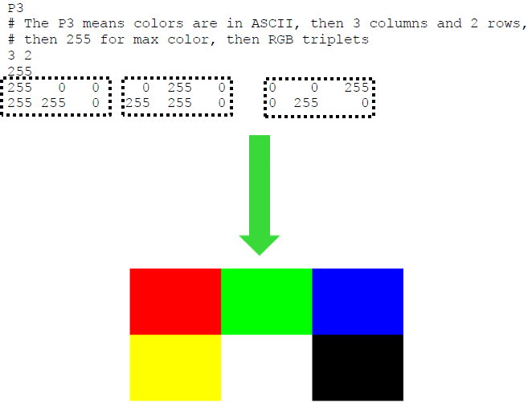

# 视觉与图像
# 图像处理简介
# 什么是图像
一幅二维图像是一个像素阵列
一幅二维图像是一个矩阵
数学工具：线性代数，神经网络
一幅二维图像是曲面（经平滑处理）
数学工具：微积分，微分几何
图像分类：
- 自然场景图像
- 社会场景图像
- 空间应用图像
- 医学生物图像
总结：
- 视觉是人类感知的最高级形式，图像在人类认知中起最为重要的作用。
- 一幅图像可以定义为一个两维函数$ I(x,y)$, 其中 为像素在图像坐标系中的坐标，为像素灰度。
- 图像数据在众多应用领域具有重要价值与意义；不同应用领域在图像信息提取方面有共性也有不同。
# 什么是图像处理
改善图像信息以便人们进行解释
图像->图像优化
为存储，传输和表示而对图像进行处理，以便于机器自动理解。
图像->图像
图像->特征：图像分割
图像压缩
图像处理的不同层次：
低级处理
图像降噪，对比都增强，图像锐化（输入输出均为图像）
中级处理
图像属性提取（输入为图像，输出为图像属性）
高级处理（计算机视觉，人工智能）
图像理解
图像处理与计算机视觉的关系？
- 图像处理是计算机处理的前处理，即基础
- 主要区别在于计算机视觉的目的是对于图像的理解
- 对于视觉信息的进一步认知推理属于人工智能的范畴
机器视觉与计算机视觉的区别是什么？
- 通常在工业场景下的计算机视觉被称为机器视觉
- 在工业场景下成像条件经常可控
# 人类视觉机理
# 人眼结构简图
视网膜有两类感光器：锥状体和杆状体
 锥状体：白昼视觉或亮视觉(600-700万) 对颜色高度敏感，而且每个锥状体都连接到神经末梢，人可以充分地分辨图像细节
杆状体：暗视觉或微光视觉(7500-15000万） 它们没有色彩感觉，而对低照明度敏感。 几个杆状体才连到一个神经末梢，所以不感知事物的细节，只感知一般的总体图像。
- 感受器的分布式关于中央凹对称的。锥状体在视网膜 的中心也就是中央凹的中心区域最密。
- 从该中心向外到偏离视轴大约20度，杆状体的密度逐渐增大，然后向外到视网膜的极限边缘处，密度逐渐下降。
- 中央凹本身是视网膜中直径约为1.5mm的圆形凹坑。 我们可以把中央凹看成是大小为1.5mm*1.5mm的方形 传感器阵列。
# 人眼视觉形成
# 马赫带效应
 # 视觉错觉
# 图像格式
# 旧版图像格式
可移植像素图格式（PPM），可移植灰度图格式（PGM）和可移植位图格式（PBM）
PBM是单色，PGM是灰度图，PPM使用RGB颜色
每个文件的开头两个字节（ASCII码）作为文件描述子，指出具体格式和编码形式。具体见下表。
| 文件描述子 | 类型 | 编码 |
|---|---|---|
P1 | 位图 | ASCII |
P2 | 灰度图 | ASCII |
P3 | 像素图 | ASCII |
P4 | 位图 | 二进制 |
P5 | 灰度图 | 二进制 |
P6 | 像素图 | 二进制 |
基于ASCII的格式使人可读，并且能够很容易的移植到其他格式。但是二进制格式更有效，不仅因为他节约空间，而且因为他更容易被解析（因为很少有空格）
当使用二进制格式的时候，PBM每像素使用一个比特空间，PGM每个像素使用8个比特空间，PPM每像素使用24比特空间（8比特红色、8比特绿色、8比特蓝色）。
PBM：portable bitmap format
P1表示文件格式。#符号表示一个注释。接下来两个数是宽度和高度。接下来的矩阵是每个像素的值。（在这里单色格式，只有0和1）
PGM：portable graymap format
PPM：portable pixmap format

# 新版图像格式
TIFF：常用无损图像格式
Tagged-Image File Format (TIFF, TIF) is used to exchange files between applications and computer platforms.
bmp
BMP is a standard Windows image format on Windows-compatible computers. BMP format supports RGB, Indexed Color, Grayscale, and Bitmap color modes
jpeg：广泛应用于数字相机图像和互联网图像，采用有损压缩，通常压缩比可达10:1，节省文件存储空间。
Joint Photographic Experts Group (JPEG) format is commonly used to display photographs and other continuous-tone images in HTML documents.
- 正是标准于1992年发布，最新一次修订于2012
- 广泛应用于数字相机图像和互联网图像，采用有损压缩，通常压缩比可达10:1, 节省文件存储空间。
- 不适于一些特定类型的图像如线条图像。
gif
Graphics Interchange Format (GIF) is the file format commonly used to display indexed-color graphics and images in HTML documents.
png
Developed as a patent-free alternative to GIF, Portable Network Graphics (PNG) format is used for lossless compression and for display of images on the web.
各种图像格式之间通常可以自由转换；
实际应用中经常连带存储关于成像条件的metadata（元数据）